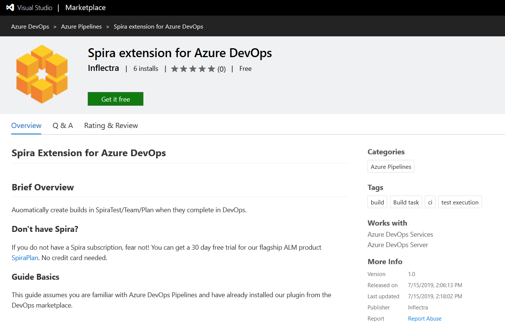
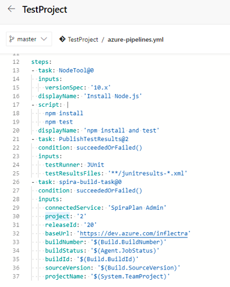
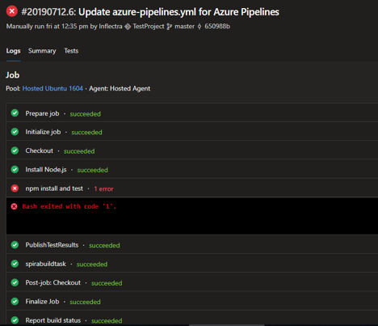
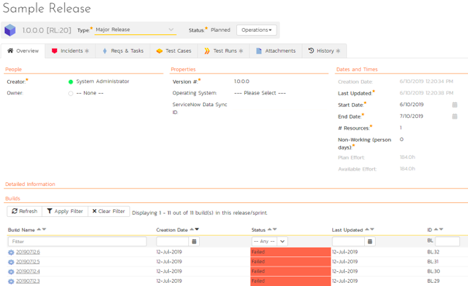
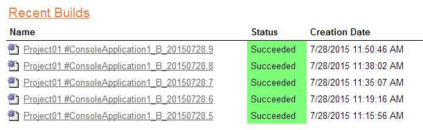
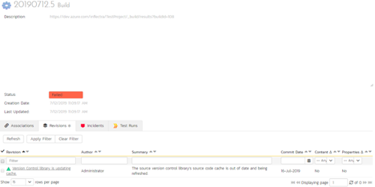

Microsoft Azure DevOps Pipelines
This section outlines how to use SpiraTest, SpiraPlan or SpiraTeam (hereafter referred to as SpiraPlan) in conjunction with Microsoft's Azure DevOps continuous integration platform called Azure DevOps Pipelines. It assumes that you already have a working installation of SpiraPlan v5.0 or later and have already setup Microsoft Azure DevOps Pipelines. If you have an earlier version of SpiraTeam, you will need to upgrade to at least v5.0.
Overview
Microsoft Azure DevOps provides tools for managing the entire application lifecycle, including source code management, reporting, automated builds, testing and release capabilities, for example. It supports version control using either its native TFS source code management system or Git. SpiraTeam has version control plugins for both TFS native and TFS with Git source code management options.
When you use the Spira Build Server Extension for Azure DevOps, it will allow you to associate different Azure DevOps projects with a corresponding project and release in SpiraPlan. Then, each time a DevOps pipeline creates a new build, a new build artifact will be created in SpiraPlan. Each build in SpiraTeam will be automatically linked to the incidents fixed, tasks implemented, requirements developed and source code revisions committed.
Installing the SpiraTeam Build Plug-in for Azure DevOps
Go to the Inflectra website and open up the page that lists the various downloads available for SpiraTeam (http://www.inflectra.com/SpiraTeam/Downloads.aspx). Listed on this page will be the Azure DevOps Pipeline Plug-In. When you click on the link on this page, it will take you to the Azure DevOps Marketplace, where you can install the Spira extension into your DevOps instance:

After that, the plugin will be available in your instance of Azure DevOps.
Authenticating with Spira
In DevOps, open the project you would like to have builds sync with Spira. Go to Project Settings > Pipelines > Service Connections
Under Service connections, click the "New service connection" button and click "SpiraPlan Configuration." Under connection name, put something helpful like SpiraPlan Fred Bloggs
For SpiraPlan URL put the 'root' directory of your Spira instance, not including the end slash. For username, put the username you use to sign-in to Spira. For RSS Token, go to your user profile page in Spira, enable RSS Feeds and copy the token into DevOps. Now verify the connection by clicking "Verify connection," if you entered everything correctly, you're good to go!
Adding the Spira Build Task
Now in the pipeline you would like to add Spira support to, open the pipeline's YAML file and in the assistant to the right, search "Spira" and select "Export data to Spira" Select the service connection name you put in earlier, enter the ID of the project in Spira you would like your results sent to, the ID of the release you would like the builds to be associated with, and the base url of your DevOps instance (like https://dev.azure.com/fabrikam or https://fabrikam.visualstudio.com)

The other fields are used internally by the plugin and should be left as-is - DO NOT CHANGE THEM. Click "Add" and add the condition: succeededOrFailed() above inputs in the YAML snippet. This makes sure that the Spira task can access the current build status.
Now move the spira-build-task YAML Snippet to the end of the file so that it's executed last. This will make sure that the final result of the build gets recorded in Spira.
Here is an example YAML file:
trigger:
- master
pool:
vmImage: 'ubuntu-latest'
steps:
- task: NodeTool@0
inputs:
versionSpec: '10.x'
displayName: 'Install Node.js'
- script: |
npm install
npm test
displayName: 'npm install and test'
- task: PublishTestResults@2
condition: succeededOrFailed()
inputs:
testRunner: JUnit
testResultsFiles: '**/junitresults-*.xml'
- task: spira-build-task@0
condition: succeededOrFailed()
inputs:
connectedService: 'SpiraPlan Fred Bloggs'
project: '2'
releaseId: '20'
baseUrl: 'https://dev.azure.com/inflectra'
buildNumber: '$(Build.BuildNumber)'
buildStatus: '$(Agent.JobStatus)'
buildId: '$(Build.BuildId)'
sourceVersion: '$(Build.SourceVersion)'
projectName: '$(System.TeamProject)'
If everything had been configured correctly a new build in DevOps will create a new build in Spira!
Viewing the Build Results in SpiraTeam
Now that you have associated your Azure DevOps pipeline with a specific SpiraTeam project and release/ iteration, you can now use Azure DevOps to manage your software builds and have the results of the build be reported back into SpiraPlan. For example, when a DevOps Pipeline runs, it will report in Azure DevOps something like the following:

The corresponding build entry will also be created in SpiraPlan under the specified project and release/iteration:

If you have configured your Project Home to include the list of recent builds, the build information will also be displayed on the Project Home dashboard:

Clicking on either of the hyperlinks will allow you to navigate to the Build details page inside SpiraTeam:

This page will display the status (success / failure) and details of the build.
Congratulations! You are now able to use SpiraPlan and Azure DevOps to be able to manage your builds and have the build status integrated into your SpiraPlan project dashboard.
Scheduling Test Sets Upon Successful Builds
One additional feature of the integration with SpiraPlan is the ability to have SpiraPlan automatically schedule the execution of a test set whenever a build passes.
To do that, make sure the Test Set is associated with the SpiraPlan release or iteration that is being built and then set the Schedule on Build field to "Yes" and optionally enter in the delay (after the build succeeds) that you want the test set to be scheduled for:

This means that you don't need to separately manage your build schedule in Azure DevOps and your test automation schedule in SpiraPlan.